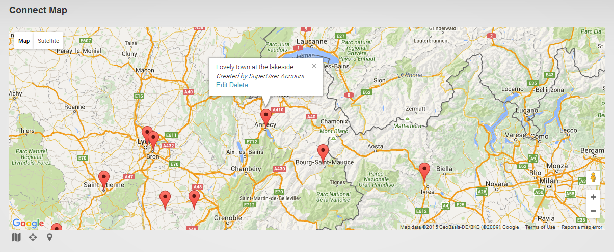
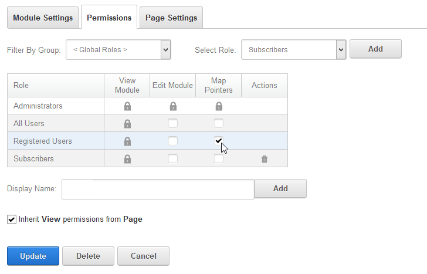
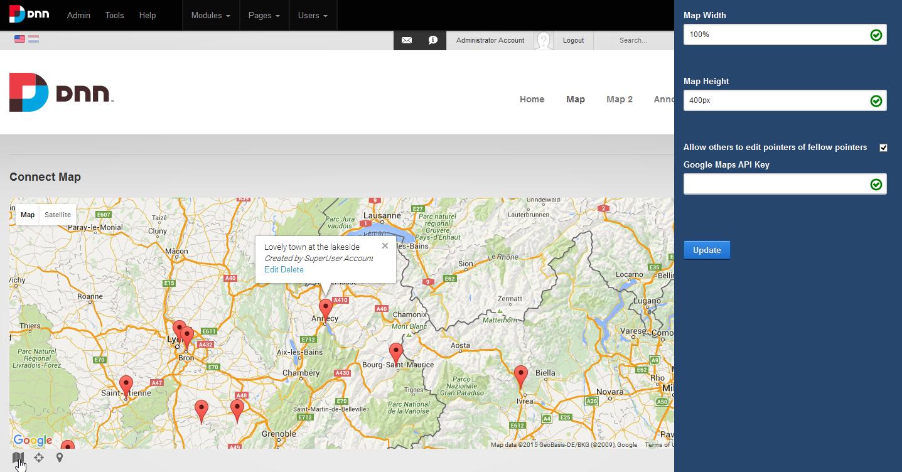
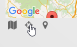
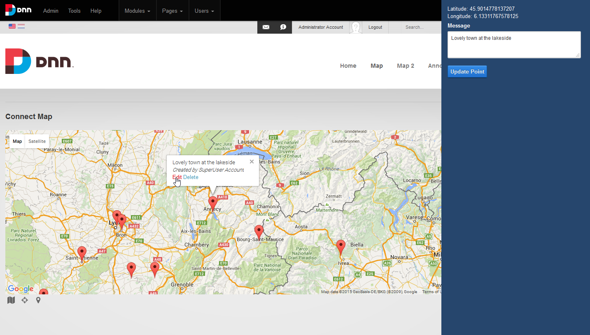
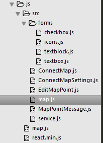

DNN Platform Connect Map Module
This is the official site of DNN Connect's Google map module for DNN Platform. You will find information about installation and technologies used on these pages.

Aims of this project
This module has been developed for the DNN module development contest held in the fall of 2015. The goals of this contest are twofold:
- To produce new and good modules for the DNN Platform
- To produce new open source modules that leverage new development methodologies that become available with DNN 8 and that developers can use to learn from
This module does just that. It is a useful module for a site that needs a straightforward map on it with some markers, and it shows how you can develop a module for DNN using the so-called SPA module approach introduce in DNN 8 combined with the latest technologies such as React JS and Gulp.
What does this module do?
The module displays a Google map. You can assign "pointer" rights to users. These users can then add markers to the map with a label. When regular users come to the web page they will see these markers and they can click them and examine the message.
Video
Installation
This module is installed like all other DNN modules. To install:
- Download the latest "_Install.zip" (release) file from this site
- Log in to your DNN installation as Superuser/Host
- Navigate to Host > Extensions
- Click "Add new extension" and upload the downloaded file following instructions on screen
- Navigate to the page you wish to have a map
- Click "Add module" from the control bar and proceed to add the map module to the page
You should now have the map visible on the page.
Configuring
- Edit the module's settings and correct the module's title (if needed) and set permissions
in case you wish to let certain users create markers.
 - Click on the map icon at the bottom left of the map to bring up the map visual settings. Edit
height, width and add a Google API key (see below) if you have one.
 - Drag to center the map where desired and use zoom to get the right zoom level. When satisfied
click the "Set map" pointer icon at the bottom. This will allow you to fix the map as it is.
 - Start adding markers.

A word about editing
By default, if a user has created a marker on the map, only that user can edit it or anyone with edit permissions on the module (presumed administrative role). By opting to allow fellow pointers to edit other points, everyone who has the ability to add points can edit any other point.
Note: If you're allowed to edit a point, you can also move a point around through click and drag.
Google Map API Key
Google allows your site to invoke the Map for a limited number of times per day if you do not supply an API key. You can increase this limit to 25000 by registering with Google and creating a key and entering it in the map settings. Beyond the 25000 hits per day Google will begin to charge you for using the maps API.
Development goals
This module aims to show how you could create a clear cut between front- and back-end coding. It takes this to the extreme by putting all the services and data access code in a C Sharp project in Visual Studio but only including the bare minimum that will be processed as it is served out to the client, namely the Map.html file. All the other files were coded using a text editor (Sublime) as if this were any other Javascript project. And those files are served to the client as-is. This helps to show how to approach services from a security perspective. After all: any client side processing is "unsafe", so you need to handle security at the gates of the service layer. I don't think that we'll ever have a "perfect" way to make a module, but this module aims to show a solid foundation for an approach with a radical separation between server- and client-side running code.
Besides showing a development strategy based on separation described above, another goal was to explore how several new and/or "foreign" technologies play with DNN. With foreign, I mean technologies that evolved outside .net and that DNN developers are not familiar with. Some of these technologies are now very dominant in web development and it is time to see how we can benefit from these. The technologies explored here are: React JS with Browserify and Gulp. Finally I also delved into Yeoman and there is now a template based on this project available for you if you use this tool.
Setting up the development environment
If you wish to get into the nuts and bolts of this module you will need to have Node JS installed on your machine and Visual Studio of course. There are two ways in which you can get a source version running on your machine. One is by installing the "Source" package file. The other way is by installing the regular "Install" package, clearing out the module's directory and Git cloning the repository to this location. I'll leave it up to you which way you prefer.
Completing installation through Node
You will need to download all the node modules necessary for running that various operations that you will need. To do this run the following command:
$ npm install
This will download all referenced node modules.
Visual Studio project
The visual studio project is loaded through the Map.sln solution file. You will need to ensure that references to these files are made:
- DotNetNuke.dll
- DotNetNuke.Web.dll
- System.Net.Http.Formatting.dll
- System.Web.Http.dll
Note I could not use Nuget as we're working on early beta releases of DNN.
Characteristics of the Map.csproj project
The server side of the module is built entirely using DAL2 (PetaPoco) and WebAPI. There are a number of abstractions that may seem over the top for such a small module but they serve to illustrate how you could build larger solutions using this pattern. Here are a few items to note:
RepositoryImpl
Using this you can cut down on code in your controllers. This class implements all the main methods of the PetaPoco repository class. So the following:
public static IEnumerable<MapPoint> GetMapPoints(int moduleId)
{
using (IDataContext db = DataContext.Instance())
{
var mapPointsRepo = db.GetRepository<MapPoint>();
return repo.Get(moduleId);
}
}
becomes:
public static IEnumerable<MapPoint> GetMapPoints(int moduleId)
{
MapPointRepository repo = new MapPointRepository();
return repo.Get(moduleId);
}
MapPoint vs MapPointBase
In SQL I use a table and a view. The view is a superset of the data that the table returns and shares its name. The table is used for inserts, updates and deletes. The view is used for all selects. The MapPointBase object is linked to the table and the MapPoint object is tied to the view. This pattern comes in especially handy when dealing with larger and more complex data structures. Follwing this pattern throughout your project also helps build consistency.
Settings and Security
These two objects (ModuleSettings and ContextSecurity) are easily created and help keep these very important aspects separate from the rest of your code. ModuleSettings stores settings at both module and tabModule level. ContextSecurity gets the permissions of the current user so we don't need to query the core throughout our code.
MapApiController
The MapApiController sits between the various WebAPI controllers of the project and the base DnnApiController. It inserts the settings and security objects mentioned above.
MapAuthorizeAttribute
This is more to illustrate how one would implement a custom authorization for a module than that it was a bare necessity. Here it is used to ensure those with "POINTER" permissions can access certain methods (note that a hierarchy of permissions is assumed so that anyone with "EDIT" permissions also has "POINTER" permissions). The attribute allows us to create our service methods as follows:
[HttpPost]
[ValidateAntiForgeryToken]
[MapAuthorize(SecurityLevel = SecurityAccessLevel.Pointer)]
public HttpResponseMessage MapPoint(MapPointBase postData)
Other CS code
For the purposes of this project I've included code that may or may not end up being added to the DNN Platform core. First I've added classes that help manage settings for module developers. They are: ISettingsStore, ModuleScopedSettings, PortalScopedSettings, StringBasedSettings and TabModuleScopedSettings. This code was developed by Stefan Cullman with feedback from Brian ? Secondly there is a Localization class which allows us to get a complete resource file with all the necessary overwritten keys based on the user's language, fallback language, portal default language and any portal overrides. This code allows us to serve out resources to the client in a batch (ClientRsources.resx).
What does all this do?
The back end does three things:
- It serves out a batch of data called "InitialData" (ModuleController) which includes settings, the current list of points on the map, security for the current user and the client resources. Compiling this in a single batch improves performance as the module only needs to call the server once to get all the necessary data to render.
- MapPoint creation/update and delete methods (MapPointsController_Services)
- Updating of settings (SettingsController)
Code organization
The client-side source code can be found under js/src:

The main entry point is map.js. Using Browserify the various scripts are compiled to js/map.js. So you should only edit the files under js/src, not the compiled script directly as it will be overwritten during compilation.
The react library itself is kept out of this so that it can be shared by DNN in case other modules on the same page also need React (not a high likelyhood at this point in time).
Solving the multiple modules per page issue
One aspect particular to DNN (or any other CMS) is that as a module developer you know your code will sit in a page surrounded by the framework and possibly with other modules around. Possibly even the same ones (i.e. multiple map modules on a page). This is a source of headaches for developers and makes module development much more complex than 99.9% of web development code examples you'll find on the web. You need to find a way to isolate your code and make sure multiple instances of your work don't comflict.
The main entry point for the module's client-side code is js/src/map.js. This runs through all the Map modules it can find on the page and creates an array of these inside a global object called ConnectMap and begin loading their initial data as follows:
loadData: function() {
nrMapsToLoad = $('.connectMap').length;
$('.connectMap').each(function(i, el) {
var moduleId = $(el).data('moduleid');
var newModule = {
service: new MapService($, moduleId)
};
ConnectMap.modules[moduleId] = newModule;
ConnectMap.modules[moduleId].service.getInitialData(function(data) {
ConnectMap.modules[moduleId].settings = data.Settings;
ConnectMap.modules[moduleId].mapPoints = data.MapPoints;
ConnectMap.modules[moduleId].security = data.Security;
ConnectMap.modules[moduleId].resources = data.ClientResources;
if (nrMapsToLoad == 1) {
ConnectMap.loadGoogle(ConnectMap.modules[moduleId].settings.GoogleMapApiKey);
}
nrMapsToLoad -= 1;
});
});
}
This approach allows us to serve out the script just once for the page and it will handle all map modules in one sweep.
Using Google's Map script
One particular issue I had coding this module is that as you cannot pass your own data into the html file that is being served and the Map API key can only be passed out through the WebAPI. This created a hurdle in loading order. First I need to load the initial data, then I can get the Google Maps script, and finally I can create the maps on the page.
A new UX approach for editing
DNN has always assumed editing happens in edit screens. These are ascx files that are registered with the module definition and when the url requests an edit page, DNN removes all other content from the page and reloads itself with just the edit page. This is fine for complex tasks, but more and more we see web development move to staying on the page (SPA = Single Page Application = don't reload your page for various actions in your app). Page reloads are expensive, wasting bandwidth and user's time as well as potentially causing confusion. Popups are a good alternative and are used often nowadays. For this module I've decided to explore the sliding panel edit screen. It is loaded from the right with animation. The container is added to the page by our code upon page load. It is filled on demand depending on the user's actions. The scroll is temporarily disabled when it's shown and clicking outside it is taken as a "cancel" and will collapse it again.
React
There are many many client-side frameworks currently en vogue. The most popular is probably Angular by Google. But there are many others with each a popular following. Because there is no single "best" solution, DNN aims to be agnostic about this. I.e. develop with the framework of your choice. React JS, by Facebook, is relatively new in this landscape and I've opted to see how it would fit in a DNN module project. There are many articles about React and how it compares to other frameworks so I'll not go over this here. But in a nutshell this framework keeps a copy of the DOM and propegates any changes you make to this to the real DOM.
React applications are built up of various React components, isolated into separate scripts here. They are:
- ConnectMap.js: the main container
- MapPointMessage.js: the popup window for map points
- EditMapPoint.js: the slide panel content for editing a point
- ConnectMapSettings.js: the slide panel content when editing the map settings
- forms/*.js: various edit controls such as text boxes and icons
All data interchange ultimately goes back to and through the base component ConnectMap.js. If you're interested to learn more about React I suggest an online course like those from Tutsplus on this.
In case you're wondering how come you see HTML inside these Javascript files: React uses a template language (JSX) to allow us to easily specify how the output HTML should look. This gets compiled through a process called "reactify" in Browserify (see below).
Gulp
Gulp is a task runner with a strong emerging community around it. It takes an alternative approach to Grunt in that it is a "streaming build system" meaning you program what happens to input and direct to output (e.g. zipping up files). It is easily extended using regular Node js conventions.
Commonly Gulp is used not just for (final) compilation but also to "watch" a set of files and act if one of them changes. In this project we're using this approach to pass our source Javascript files to Browserify to compile a single script from them:
gulp.task('browserify', function() {
gulp.src('js/src/map.js')
.pipe(plumber())
.pipe(browserify({
transform: 'reactify',
ignore: 'react'
}))
.pipe(gulp.dest('js/'));
});
gulp.task('watch', function() {
gulp.watch('js/src/**/*.js', ['browserify']);
});
The above two tasks can be invoked as follows:
$ gulp browserify
This will compile the scripts once, on command.
$ gulp watch
This will begin listening to the files under js/src and invoke the browserify task if any changes are detected.
A new Gulp extension: gulp-dnn-manifest
As an intellectual challenge I wanted to see if we could replace our classic build system using Visual Studio with Gulp. Given that it did most of the tasks we need to create a module package, I guessed this should be possible. And it is. One task I needed to create myself, though, is the creation of the DNN manifest. This is now available on Github and through npm as well.
If you want to know more about this task, check it out here: http://donker.github.io/gulp-dnn-manifest
Encore: Yeoman generator for this module
As we were going to explore the impact of alternative technologies on DNN, I decided to see if a module such as this one could be built using the Yeoman scaffolding engine. Yeoman takes a template and scaffolds out your project. In Visual Studio we have templates as well, but the lack of configuration options (you can basically only enter one parameter during generation: a project name) has always made this somewhat limited in my opinion. Technically you can make Visual Studio generators that take more parameters but this gets very involved and you need to create an entire (Windows) form to accept input for this. Yeoman is based on Node so it's all script driven. This makes it far easier to work with custom parameters. And because it is basically a task runner that you're programming in, there's not much you can't do.
The result is the Yeoman DNN SPA/Gulp/React module generator. It's quite a mouthful but then I wanted to spell it out. This project may well grow over time to allow more templates, but for now it will scaffold out something like this Map module based upon your input.
About
DNN Platform
The DNN Platform is the largest web application framework for asp.net and has been a popular choice for web developers since 2002. It is open source and is supported by enthusiasts the world over.
The platform operates as a portal framework, meaning it can host multiple websites on a single installation. This allows users to scale solutions easily. All data, configuration and the actual content are stored in SQL Server. The platform generates the pages on the fly and serves them out to the client. DNN has an extensive security model to ensure solid access management. The platform can be extended in numerous ways, not least using modules that manifest themselves as blobs on web pages. The Connect Map module is such a module.
DNN Connect
DNN Connect is all about connecting the community around the Open Source DNN Platform. Since its inception in 2002, DNN Platform (or DotNetNuke as it used to be known) has drawn an ever increasing amount of web professionals into a lively community. At first mostly from the United States, now these DNNers come from all around the globe.
DNN Connect finds its origins in a group of DNN friends in Europe who knew each other from their work in the DNN "Core Team" and from the global conferences around DNN. For the love of the platform and in order to advance the interests of non-English speaking community, these friends decided to meet up informally. These events have become a huge success, attracting fellow DNNers not just from every corner of Europe, but also from overseas. Hence DNN Connect was born.